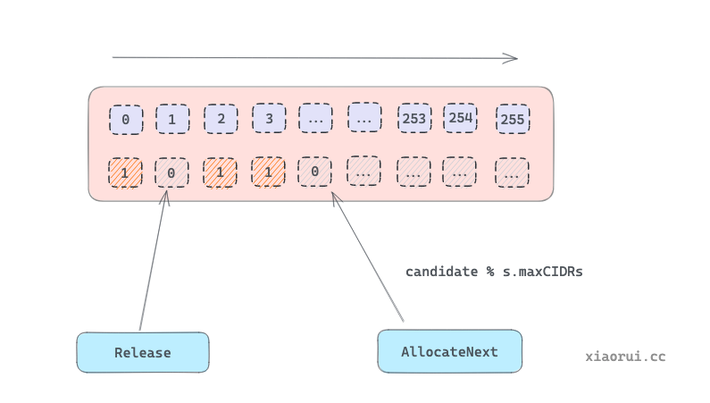
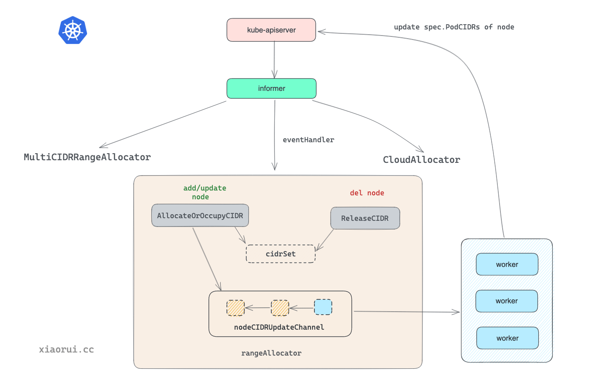

node-ipam-controller-node-podcidr node对象 1 2 3 4 5 6 7 8 9 10 11 kubectl get node master1 -o yaml ... spec: configSource: configMap: kubeletConfigKey: kubelet name: master1-kubelet-config namespace: kube-system podCIDR: 10.10.50.0/24 podCIDRs: - 10.10.50.0/24
node对象中的podcidr属性，其作用是当前节点的cni plugin会获取该参数，从而为pod分配具体的ip地址
kube-controller-manager中与node相关的两个：node-ipam-controller和node-lifecycle-controller
node ipam 控制器参数 node ipam controller参数是从controller-manager的启动参数中传入
node-ipam-controller启动参数如下面
1 2 3 4 kube-controller-manager \ --allocate-node-cidrs=true \ --cluster-cidr=10.10.50.0/24 \ --cidr-allocator-type=rangeAllocator
全局的配置参数对象是config, 其中控制器的参数是KubeControllerManagerOptions, 是由各个具体控制器组合而成
1 2 3 4 5 6 7 8 9 10 11 12 13 14 15 16 17 type Config struct { ComponentConfig kubectrlmgrconfig.KubeControllerManagerConfiguration // 组件配置 } 每个控制器配置对象 type KubeControllerManagerOptions struct { metav1.TypeMeta Generic cmconfig.GenericControllerManagerConfiguration KubeCloudShared cpconfig.KubeCloudSharedConfiguration AttachDetachController attachdetachconfig.AttachDetachControllerConfiguration CSRSigningController csrsigningconfig.CSRSigningControllerConfiguration NodeIPAMController nodeipamconfig.NodeIPAMControllerConfiguration NodeLifecycleController nodelifecycleconfig.NodeLifecycleControllerConfiguration ... }
将kube-controller-mamager的启动flag参数（KubeControllerManagerOptions对象）通过applyto方法实例化到c对应控制器参数中，完成启动命令行参数到对应控制器配置参数的转换。
1 2 3 4 5 6 7 8 9 10 11 12 13 14 15 16 17 18 19 20 21 22 23 24 25 26 27 28 29 30 31 func (s KubeControllerManagerOptions) Config(allControllers []string, disabledByDefaultControllers []string) (*kubecontrollerconfig.Config, error) { c := &kubecontrollerconfig.Config{ Client: client, Kubeconfig: kubeconfig, EventRecorder: eventRecorder, LeaderElectionClient: leaderElectionClient, } if err := s.ApplyTo(c); err != nil { return nil, err } } func (s *KubeControllerManagerOptions) ApplyTo(c *kubecontrollerconfig.Config) error { // 一些共享的配置项 if err := s.KubeCloudShared.ApplyTo(&c.ComponentConfig.KubeCloudShared); err != nil { return err } // 将NodeIPAMController的参数，flags传入，配置给c对象 if err := s.NodeIPAMController.ApplyTo(&c.ComponentConfig.NodeIPAMController); err != nil { return err } // 将NodeLifecycleController的参数，配置给c对象 if err := s.NodeLifecycleController.ApplyTo(&c.ComponentConfig.NodeLifecycleController); err != nil { return err } }
1 2 3 4 5 6 7 8 9 10 func (o *KubeCloudSharedOptions) ApplyTo(cfg *cpconfig.KubeCloudSharedConfiguration) error { ... cfg.ClusterName = o.ClusterName cfg.ClusterCIDR = o.ClusterCIDR cfg.AllocateNodeCIDRs = o.AllocateNodeCIDRs cfg.CIDRAllocatorType = o.CIDRAllocatorType // RangeAllocator，默认网段分配器 ... } fs.StringVar(&o.CIDRAllocatorType, "cidr-allocator-type", "RangeAllocator", "Type of CIDR allocator to use")
主要关注node-ipam-controller的启动参数
1 2 3 kube-controller-manager \ --allocate-node-cidrs=true \ --cluster-cidr=10.10.50.0/24 clusterCIDRs参数
node ipam 控制器 实例化 1 2 3 4 5 6 7 8 9 10 11 12 13 14 15 16 17 18 func NewNodeIpamController(){ if ic.allocatorType == ipam.IPAMFromClusterAllocatorType || ic.allocatorType == ipam.IPAMFromCloudAllocatorType { startLegacyIPAM(ic, nodeInformer, cloud, kubeClient, clusterCIDRs, serviceCIDR, nodeCIDRMaskSizes) } else { // 分配器参数 allocatorParams := ipam.CIDRAllocatorParams{ ClusterCIDRs: clusterCIDRs, ServiceCIDR: ic.serviceCIDR, SecondaryServiceCIDR: ic.secondaryServiceCIDR, NodeCIDRMaskSizes: nodeCIDRMaskSizes, } // 实例化cidr的分配器 ic.cidrAllocator, err = ipam.New(kubeClient, cloud, nodeInformer, ic.allocatorType, allocatorParams) } } }
启动 1 2 3 4 5 6 7 8 9 10 11 12 13 14 15 16 17 func (nc *Controller) Run(stopCh <-chan struct{}) { defer utilruntime.HandleCrash() klog.Infof("Starting ipam controller") defer klog.Infof("Shutting down ipam controller") if !cache.WaitForNamedCacheSync("node", stopCh, nc.nodeInformerSynced) { return } if nc.allocatorType != ipam.IPAMFromClusterAllocatorType && nc.allocatorType != ipam.IPAMFromCloudAllocatorType { go nc.cidrAllocator.Run(stopCh) } <-stopCh }
异步运行cidrAllocator
cidr 分配器 创建分配器 1 2 3 4 5 6 7 8 9 10 11 12 13 14 15 16 // New creates a new CIDR range allocator. func New(...) (CIDRAllocator, error) { nodeList, err := listNodes(kubeClient) if err != nil { return nil, err } switch allocatorType { case RangeAllocatorType: return NewCIDRRangeAllocator(kubeClient, nodeInformer, allocatorParams, nodeList) case CloudAllocatorType: return NewCloudCIDRAllocator(kubeClient, cloud, nodeInformer) default: return nil, fmt.Errorf("invalid CIDR allocator type: %v", allocatorType) } }
根据参数--cidr-allocator-type 实例化cidr分配器，默认 RangeAllocatorType
range allocator 原理 创建rangeallocator 1 2 3 4 5 6 7 8 9 10 11 12 13 14 15 16 17 18 19 20 21 22 23 24 25 26 27 28 29 30 31 32 33 34 35 36 37 38 39 40 41 42 43 44 45 46 47 48 49 50 51 52 53 54 55 56 57 58 59 60 61 62 63 64 65 func NewCIDRRangeAllocator(client clientset.Interface, nodeInformer informers.NodeInformer, allocatorParams CIDRAllocatorParams, nodeList *v1.NodeList) (CIDRAllocator, error) { // 遍历配置中的cidrs列表，生成cidrSet对象列表中 // create a cidrSet for each cidr we operate on // cidrSet are mapped to clusterCIDR by index cidrSets := make([]*cidrset.CidrSet, len(allocatorParams.ClusterCIDRs)) for idx, cidr := range allocatorParams.ClusterCIDRs { //入参(10.16.0./16, 24) cidrSet, err := cidrset.NewCIDRSet(cidr, allocatorParams.NodeCIDRMaskSizes[idx]) if err != nil { return nil, err } cidrSets[idx] = cidrSet } ra := &rangeAllocator{ client: client, clusterCIDRs: allocatorParams.ClusterCIDRs, cidrSets: cidrSets, nodeLister: nodeInformer.Lister(), nodesSynced: nodeInformer.Informer().HasSynced, // 异步通知给worker协程 nodeCIDRUpdateChannel: make(chan nodeReservedCIDRs, cidrUpdateQueueSize), recorder: recorder, // 控制并发 nodesInProcessing: sets.NewString(), } ... if nodeList != nil { for _, node := range nodeList.Items { if len(node.Spec.PodCIDRs) == 0 { // node没有配置过，直接忽略 klog.V(4).Infof("Node %v has no CIDR, ignoring", node.Name) continue } // 分配过cidr,则占位处理，cidr is marked as used，记录在allocated对象中， 避免下次还分配这个子网 if err := ra.occupyCIDRs(&node); err != nil { // This will happen if: // 1. We find garbage in the podCIDRs field. Retrying is useless. // 2. CIDR out of range: This means a node CIDR has changed. // This error will keep crashing controller-manager. return nil, err } } } // nodeinformer注册eventHandler事件 nodeInformer.Informer().AddEventHandler(cache.ResourceEventHandlerFuncs{ // 新node加入集群，为其分配cidr，如果之前已经分配，则占位，避免再次分配它 AddFunc: nodeutil.CreateAddNodeHandler(ra.AllocateOrOccupyCIDR), // 当 node 对象发生变更时 且 PodCIDRs 段为空时才分配 cidr 段 UpdateFunc: nodeutil.CreateUpdateNodeHandler(func(_, newNode *v1.Node) error { // 若之前已经分配，仍沿用之前的 if len(newNode.Spec.PodCIDRs) == 0 { return ra.AllocateOrOccupyCIDR(newNode) } return nil }), // 当 node 被清理时, 尝试释放其关联的 pod cidrs DeleteFunc: nodeutil.CreateDeleteNodeHandler(ra.ReleaseCIDR), }) return ra, nil }
启动 range Allocator 启动30个worker协程去处理node cidr的信息更新。 只有一个worker从nodeCIDRUpdateChannel,管道消费事件，并调用 updateCIDRsAllocation 向 apiserver 更新 node cidr 地址段的关系.
1 2 3 4 5 6 7 8 9 10 11 12 13 14 15 16 17 18 19 20 21 22 23 24 25 26 27 28 29 30 31 32 33 34 35 36 37 // The no. of NodeSpec updates NC can process concurrently. cidrUpdateWorkers = 30 func (r *rangeAllocator) Run(stopCh <-chan struct{}) { defer utilruntime.HandleCrash() klog.Infof("Starting range CIDR allocator") defer klog.Infof("Shutting down range CIDR allocator") if !cache.WaitForNamedCacheSync("cidrallocator", stopCh, r.nodesSynced) { return } for i := 0; i < cidrUpdateWorkers; i++ { go r.worker(stopCh) } <-stopCh } func (r *rangeAllocator) worker(stopChan <-chan struct{}) { for { select { case workItem, ok := <-r.nodeCIDRUpdateChannel: // 30个协程，只有一个会抢到，其他阻塞。 if !ok { klog.Warning("Channel nodeCIDRUpdateChannel was unexpectedly closed") return } // 已经为 node 分配 cidr 地址段, 通过PatchNodeCIDRs方法向 apiserver 更新 node 对象. if err := r.updateCIDRsAllocation(workItem); err != nil { // Requeue the failed node for update again. r.nodeCIDRUpdateChannel <- workItem } case <-stopChan: return } } }
当node add,upate时都会调用AllocateOrOccupyCIDR， 为 node 新申请分配和占位 cidr
1 2 3 4 5 6 7 8 9 10 11 12 13 14 15 16 17 18 19 20 21 22 23 24 25 26 27 28 29 30 31 32 33 34 35 36 37 38 39 40 func (r *rangeAllocator) AllocateOrOccupyCIDR(node *v1.Node) error { // 提前返回，防御式编程 if node == nil { return nil } // event handler 规避并发问题，避免处理同一个node. // lock + map实现，这里值得学习 if !r.insertNodeToProcessing(node.Name) { klog.V(2).Infof("Node %v is already in a process of CIDR assignment.", node.Name) return nil } // node已经有cidr了，在分配器里将该cidr占掉，避免再次分配 if len(node.Spec.PodCIDRs) > 0 { return r.occupyCIDRs(node) } // allocate and queue the assignment allocated := nodeReservedCIDRs{ nodeName: node.Name, allocatedCIDRs: make([]*net.IPNet, len(r.cidrSets)), } for idx := range r.cidrSets { // 从对应的cidr集合里分配一个 cidr，作为pod的cidr podCIDR, err := r.cidrSets[idx].AllocateNext() if err != nil { // 如果有异常则在 nodesInProcessing 集合中删除 r.removeNodeFromProcessing(node.Name) nodeutil.RecordNodeStatusChange(r.recorder, node, "CIDRNotAvailable") return fmt.Errorf("failed to allocate cidr from cluster cidr at idx:%v: %v", idx, err) } // 记录idx个cidrset，已经分配的 cidr，避免重复分 allocated.allocatedCIDRs[idx] = podCIDR } //queue the assignment klog.V(4).Infof("Putting node %s with CIDR %v into the work queue", node.Name, allocated.allocatedCIDRs) // 上面只是为node申请分配cidr地址段，而具体更新node则是异步由worker协程处理 r.nodeCIDRUpdateChannel <- allocated return nil }
这里提到了cidrSets及AllocateNext()， 具体是如何分的？
cidrset 的设计实现原理 CidrSet 的功能是用来实现申请分配新的 cidr, 释放老的 cidr 和占位已存在 cidr 地址段的类
源码位置: pkg/controller/nodeipam/ipam/cidrset/cidr_set.go
实例化 cidrset 地址计算器 1 2 3 4 5 6 7 8 9 10 11 12 13 14 15 16 17 18 19 20 21 22 23 24 // NewCIDRSet creates a new CidrSet. func NewCIDRSet(clusterCIDR *net.IPNet, subNetMaskSize int) (*CidrSet, error) { // 获取掩码对象 clusterMask := clusterCIDR.Mask // 掩码大小 clusterMaskSize, bits := clusterMask.Size() var maxCIDRs int // 地址为空或者掩码相减大于 16, 子网配置不合理, if (clusterCIDR.IP.To4() == nil) && (subNetMaskSize-clusterMaskSize > clusterSubnetMaxDiff) { return nil, ErrCIDRSetSubNetTooBig } // 计算可分配地址段的个数。 maxCIDRs = 1 << uint32(subNetMaskSize-clusterMaskSize) return &CidrSet{ clusterCIDR: clusterCIDR, nodeMask: net.CIDRMask(subNetMaskSize, bits), clusterMaskSize: clusterMaskSize, maxCIDRs: maxCIDRs, nodeMaskSize: subNetMaskSize, label: clusterCIDR.String(), }, nil }
分析下 maxCIDRs 过程
1 2 3 4 5 6 7 8 9 10 11 12 13 14 15 func main() { cidr := "127.123.3.0/16" _, clusterCIDR, _ := netutils.ParseCIDRSloppy(cidr) fmt.Println("clusterCIDR:", clusterCIDR.String()) // output: 10.20.0.0/16 clusterMaskSize, _ := clusterCIDR.Mask.Size() fmt.Println("clusterMaskSize: ", clusterMaskSize) // output: 16 max := getMaxCIDRs(24, clusterMaskSize) fmt.Println("getMaxCIDRs:", max) // output: 256 } func getMaxCIDRs(subNetMaskSize, clusterMaskSize int) int { return 1 << uint32(subNetMaskSize-clusterMaskSize) }
比如clusterCIDR是127.123.3.0/16其掩码是16，可分给node的子网是24，127.123.0.0 - 127.123.255.0, 可以拿到256个cidr段（0-255），每个cidr可以分配254个地址(0 为网络号, 255 为广播地址). 理论上集群一共可以分配254*256=65,024个pod地址，当前每个 k8s node 默认下可以开 110 个 pod, 一个 cidr 的地址就够了
申请 cidr 地址段 (AllocateNext) 
pkg/controller/nodeipam/ipam/cidrset/cidr_set.go
1 2 3 4 5 6 7 8 9 10 11 12 13 14 15 16 17 18 19 20 21 22 23 24 25 26 27 28 29 30 31 32 33 34 35 36 37 38 39 40 41 42 43 44 45 46 47 48 49 50 // AllocateNext allocates the next free CIDR range. This will set the range // as occupied and return the allocated range. func (s *CidrSet) AllocateNext() (*net.IPNet, error) { s.Lock() defer s.Unlock() // 如果当前分配的 cidr 已经等于 maxCIDRs, 则直接无剩余 cidr 地址段错误. if s.allocatedCIDRs == s.maxCIDRs { return nil, ErrCIDRRangeNoCIDRsRemaining } candidate := s.nextCandidate var i int // 从上次计算出的 next candidate 位置开始找， 0-255间的 for i = 0; i < s.maxCIDRs; i++ { // 0表示未使用，找到了 if s.used.Bit(candidate) == 0 { break } // 已被分配，尝试从下一个继续寻找 candidate = (candidate + 1) % s.maxCIDRs } // 下一个备选的cidr 编号 s.nextCandidate = (candidate + 1) % s.maxCIDRs // 设置used bitmap中candidate位置为1，表示使用 s.used.SetBit(&s.used, candidate, 1) // 统计已分配的个数，每次都+1 s.allocatedCIDRs++ ... // 计算出可分配的cidr index return s.indexToCIDRBlock(candidate), nil } 通过cidr的index，返回一个具体的cidr值。 func (s *CidrSet) indexToCIDRBlock(index int) *net.IPNet { var ip []byte switch /*v4 or v6*/ { case s.clusterCIDR.IP.To4() != nil: { j := uint32(index) << uint32(32-s.nodeMaskSize) ipInt := (binary.BigEndian.Uint32(s.clusterCIDR.IP)) | j ip = make([]byte, net.IPv4len) binary.BigEndian.PutUint32(ip, ipInt) } case s.clusterCIDR.IP.To16() != nil: ... } return &net.IPNet{ IP: ip, Mask: s.nodeMask, } }
通过测试用例可以知道，CIDRBlock是”127.123.0.0/24”， 也就是一个cidr；127.123.0.0, index 为 10 时, cidr 为 127.123.10.0
释放不用的 cidr 地址段 1 2 3 4 5 6 7 8 9 10 11 12 13 14 15 16 17 18 19 20 21 22 23 24 25 26 27 28 29 30 31 32 33 34 35 36 37 func (r *rangeAllocator) ReleaseCIDR(node *v1.Node) error { if node == nil || len(node.Spec.PodCIDRs) == 0 { return nil } for idx, cidr := range node.Spec.PodCIDRs { _, podCIDR, err := net.ParseCIDR(cidr) if err = r.cidrSets[idx].Release(podCIDR); err != nil { return fmt.Errorf("error when releasing CIDR %v: %v", cidr, err) } } } // Release releases the given CIDR range. func (s *CidrSet) Release(cidr *net.IPNet) error { // 通过pod的cidr，查询到当前cidrset的begin和end index begin, end, err := s.getBeginingAndEndIndices(cidr) if err != nil { return err } s.Lock() defer s.Unlock() for i := begin; i <= end; i++ { // Only change the counters if we change the bit to prevent // double counting. // 如果第index个cidr被用了，则将该cidr设置为0，同时已分配数减1 if s.used.Bit(i) != 0 { s.used.SetBit(&s.used, i, 0) s.allocatedCIDRs-- cidrSetReleases.WithLabelValues(s.label).Inc() } } cidrSetUsage.WithLabelValues(s.label).Set(float64(s.allocatedCIDRs) / float64(s.maxCIDRs)) return nil }
cidrset.Release是分配器将指定的cidr释放掉
占位已被使用 CIDR 地址段 cidrset.occopy是分配器将已经分配给node的cidr标记已使用，避免被新的node再占用。
1 2 3 4 5 6 7 8 9 10 11 12 13 14 15 16 17 18 19 20 21 func (s *CidrSet) Occupy(cidr *net.IPNet) (err error) { begin, end, err := s.getBeginingAndEndIndices(cidr) if err != nil { return err } s.Lock() defer s.Unlock() for i := begin; i <= end; i++ { // Only change the counters if we change the bit to prevent // double counting. if s.used.Bit(i) == 0 { // 设置为1表示已占用 s.used.SetBit(&s.used, i, 1) s.allocatedCIDRs++ cidrSetAllocations.WithLabelValues(s.label).Inc() } } cidrSetUsage.WithLabelValues(s.label).Set(float64(s.allocatedCIDRs) / float64(s.maxCIDRs)) return nil }
调用client-go去patch node对象，这里值得学习
1 2 3 4 5 6 7 8 9 10 11 12 13 14 15 16 17 // pkg/controller/nodeipam/ipam/adapter.go func (a *adapter) UpdateNodePodCIDR(ctx context.Context, node *v1.Node, cidrRange *net.IPNet) error { patch := map[string]interface{}{ "apiVersion": node.APIVersion, "kind": node.Kind, "metadata": map[string]interface{}{"name": node.Name}, "spec": map[string]interface{}{"podCIDR": cidrRange.String()}, } bytes, err := json.Marshal(patch) if err != nil { return err } _, err = a.k8s.CoreV1().Nodes().Patch(context.TODO(), node.Name, types.StrategicMergePatchType, bytes, metav1.PatchOptions{}) return err }
总结 
node ipam controller 通过nodeinformer watch node对象，当node增加或删除时，通过rangeAllocator地址段分配器分配/回收可用的cidr地址段，然后向apiserver更新node podcidrs配置
ref
https://github.com/rfyiamcool/notes/blob/main/kubernetes_nodeipam_controller_code.md